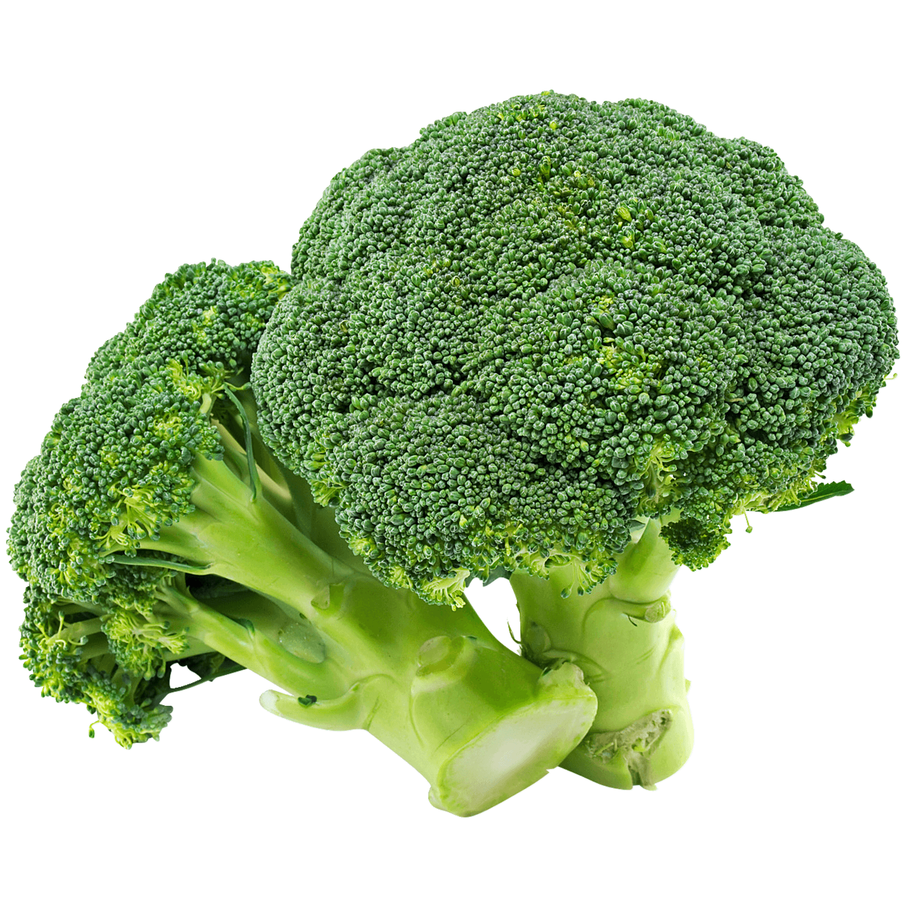

Steamed Broccoli

Nutrition Facts
102 calories per serving (2); protein 4.3g; carbohydrates 10g; fat 6.3g; cholesterol 15.3mg; sodium 90.4mg
Ingredients
- 1 head broccoli, cut in to florets
- 1 slice cooked bacon, chopped
- 1 tablespoon butter
- salt and pepper to taste
Directions
- Place a steamer insert into a saucepan and fill with water to just below the bottom of the steamer. Bring water to a boil. Add broccoli, cover, and steam until tender, 3 to 5 minutes.
- Mix steamed broccoli, bacon, butter, salt, and pepper together in a bowl
- EAT
Home